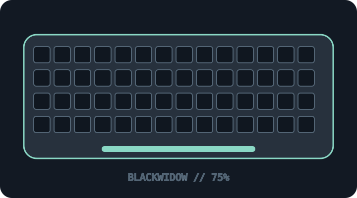

[ KEYBOARDS AND INTEGRATED POINTING DEVICES // IDENTIFIED SKU ]
Razer BlackWidow V4 75% (RZ03-0500)
75% hot-swappable mechanical keyboard with detachable USB-C and Razer Chroma lighting.

MODEL IDENTIFICATION: RZ03-0500x family — BlackWidow V4 75%; suffix/color and switch option must be read from the unit label. This archive entry identifies a real manufacturer product/variant; physical labels and dated manuals supersede generalized family descriptions.
Model specifications
| Catalog subcategory | Keyboards and integrated pointing devices |
|---|---|
| Exact model / SKU | RZ03-0500x family — BlackWidow V4 75%; suffix/color and switch option must be read from the unit label. |
| Layout and key arrangement | 75% ANSI gaming layout retaining function row, arrow keys and navigation keys while omitting the numeric keypad. Regional layouts vary. |
| Switch type / mechanism | MX-style hot-swap sockets; the base model is commonly supplied with Razer Orange tactile switches, with alternate switch/color variants. Verify pin compatibility and fitted switch before service. |
| Interface and protocol | Wired USB-C data connection using the supplied detachable cable. No Bluetooth or 2.4 GHz typing mode. Razer Synapse enables software-level remapping/lighting features. |
| Key rollover / anti-ghosting | Razer specifies N-key rollover and anti-ghosting. Test on the intended USB host; software/profile-dependent features are separate from basic HID typing. |
| External dimensions | Approximately 382 × 159.6 × 39.6 mm (width × depth × height), excluding any separately bundled wrist rest. Confirm the measured unit and regional variant. |
| OS and host compatibility | Basic USB keyboard operation is suitable for USB HID hosts; advanced Chroma, macros and remapping require supported Razer Synapse on Windows (some features/platform support vary). Generic Linux/macOS typing does not guarantee Synapse features. |
| Revision / regional caveat | BlackWidow V4 75% is not the full-size V4, V4 Pro or V4 X. Model number suffix, color, preinstalled switches and included accessories differ; RZ03-0500 regional SKUs and Synapse versions must be recorded. |
Preservation and service notes
Unplug before removing switches/keycaps, document socket/switch type, retain original switches and wrist rest separately, and export Synapse profiles where supported. Keep liquid away from the board.
Record the as-found SKU/revision, host OS and version, connection method, firmware, keymap and test method. Do not infer rollover or compatibility from the connector alone; clearly separate unpublished manufacturer specifications from tested observations.
Manufacturer sources
- Razer BlackWidow V4 75% product pageManufacturer product description, layout and switch features.
- Razer BlackWidow V4 75% support and FAQManufacturer support/FAQ reference for the RZ03-0500 family.
Manufacturer pages can be revised or retired. Retain the applicable dated manual/specification with the physical equipment record.